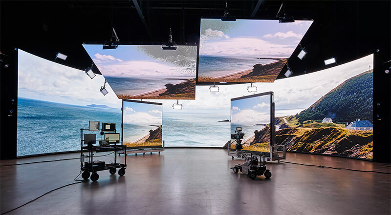

üîµReproductores Multimedia: Permiten visualizar o escuchar contenido multimedia.
Ejemplos: VLC Media Player, Windows Media Player, QuickTime.
üü¢Editores de Contenido Multimedia: Se utilizan para crear, modificar y mejorar archivos multimedia.
üü†Editores de Imagen: Adobe Photoshop, GIMP, Canva.
üî¥Editores de Video: Adobe Premiere Pro, DaVinci Resolve, CapCut.
⚫Editores de Audio: Audacity, Adobe Audition, GarageBand.
üü§Aplicaciones de Presentaci√≥n: Crean diapositivas con texto, imágenes, videos y audio para exposiciones. Ejemplos: Microsoft PowerPoint, Google Slides, Keynote.
üü£Videojuegos: Son quizás las aplicaciones multimedia más complejas y populares, combinando gráficos 2D/3D, audio, video y una alta interactividad.

♦️ Aplicaciones Educativas Interactivas: Utilizan multimedia para enseñar y facilitar el aprendizaje. Ejemplos: Duolingo, simuladores de ciencia, enciclopedias interactivas.
üî∂ Aplicaciones de Realidad Virtual (RV) y Realidad Aumentada (RA): Ofrecen experiencias inmersivas o superponen informaci√≥n digital en el mundo real.
Ejemplos: Meta Horizon Worlds (RV), Pokémon GO (RA).
üîπSoftware de Dise√±o Gráfico y Animaci√≥n: Aunque algunos son editores, otros son para creaci√≥n desde cero.
Ejemplos: Adobe Illustrator (vectores), Blender (modelado 3D y animación), Adobe Animate (animación 2D).
➡️ Plataformas de Redes Sociales: Integran y permiten compartir diversos tipos de contenido multimedia. Ejemplos: TikTok, Instagram, YouTube.


#️⃣ Adobe Premiere Pro: Estándar de la industria para edición profesional.
✳️ DaVinci Resolve: Software muy potente y con una versión gratuita muy completa, ideal para colorización y edición.
üí† Final Cut Pro: Excelente para usuarios de Apple.
#️⃣Adobe Photoshop: El software más utilizado para manipulación y edición de imágenes.
✳️GIMP: Una excelente alternativa gratuita y de código abierto.
#️⃣Adobe Illustrator: Para gráficos vectoriales (logotipos, ilustraciones).
✳️Inkscape: Alternativa gratuita a Illustrator.
#️⃣Blender: Gratuito y de código abierto, extremadamente potente para modelado, animación, renderizado y más.
✳️Autodesk Maya / 3ds Max: Herramientas profesionales para animación 3D.

☑️ Unity: Motor de juego muy popular, versátil y con una gran comunidad, ideal para juegos 2D y 3D.
✅Unreal Engine: Conocido por sus gráficos fotorrealistas y usado en juegos AAA.
☑️Figma: Herramienta colaborativa basada en la nube para diseñar interfaces.
✅Adobe XD / Sketch: Otras opciones populares para diseño de interfaces.


Crear una buena aplicación multimedia no es solo saber usar el software, sino también entender cómo el usuario interactuará con ella. Algunos principios clave incluyen:
üîµ Usabilidad: Que la aplicaci√≥n sea fácil de usar y entender.
üü¢ Interactividad: Que el usuario pueda controlar la experiencia y recibir retroalimentaci√≥n.
üü† Consistencia: Mantener una interfaz y comportamiento uniformes.
üî¥ Atractivo Visual: Un dise√±o est√©tico y profesional.
⚫ Eficiencia: Que la aplicación sea rápida y no consuma demasiados recursos.
üü§ Accesibilidad: Que sea utilizable por la mayor cantidad de personas posible, incluyendo aquellas con discapacidades.
üü£ Modularidad: Organizar el contenido y la funcionalidad en bloques manejables.
üü¢ Navegaci√≥n Intuitiva: Facilitar que el usuario encuentre lo que busca.
❇️ El campo multimedia está en constante evolución. Algunas tendencias actuales incluyen:
#️⃣ Inteligencia Artificial (IA) y Machine Learning (ML): Integración en herramientas de edición (ej. edición automática de video, mejora de imagen por IA), creación de contenido (generación de texto a imagen/video) y personalización de experiencias de usuario.
ℹ️ Realidad Virtual (RV) y Realidad Aumentada (RA): Expansión en juegos, educación, simulaciones y marketing. El metaverso es un concepto que impulsa estas tecnologías.
✳️ Experiencias Inmersivas: Más allá de RV/RA, se busca una mayor inmersión en todo tipo de aplicaciones, con audio espacial, retroalimentación háptica (vibraciones) y gráficos de alta fidelidad.
❇️ Contenido Interactivo y Personalizado: Las aplicaciones se adaptan cada vez más a las preferencias y acciones del usuario.
✳️ Computación en la Nube y Streaming: Permite acceder a contenido multimedia y herramientas de edición desde cualquier dispositivo, sin necesidad de descargas pesadas.
✅ WebAssembly (Wasm): Habilita aplicaciones de alto rendimiento (como juegos o editores) directamente en el navegador web.